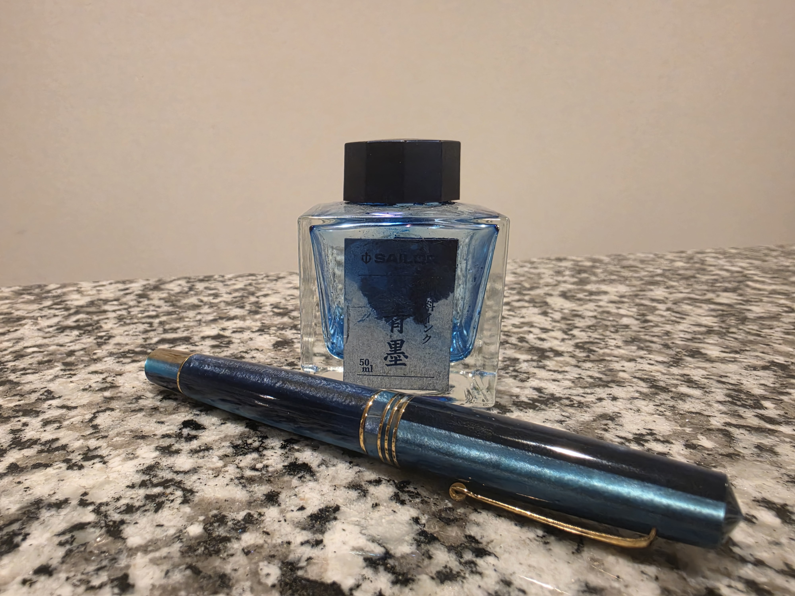
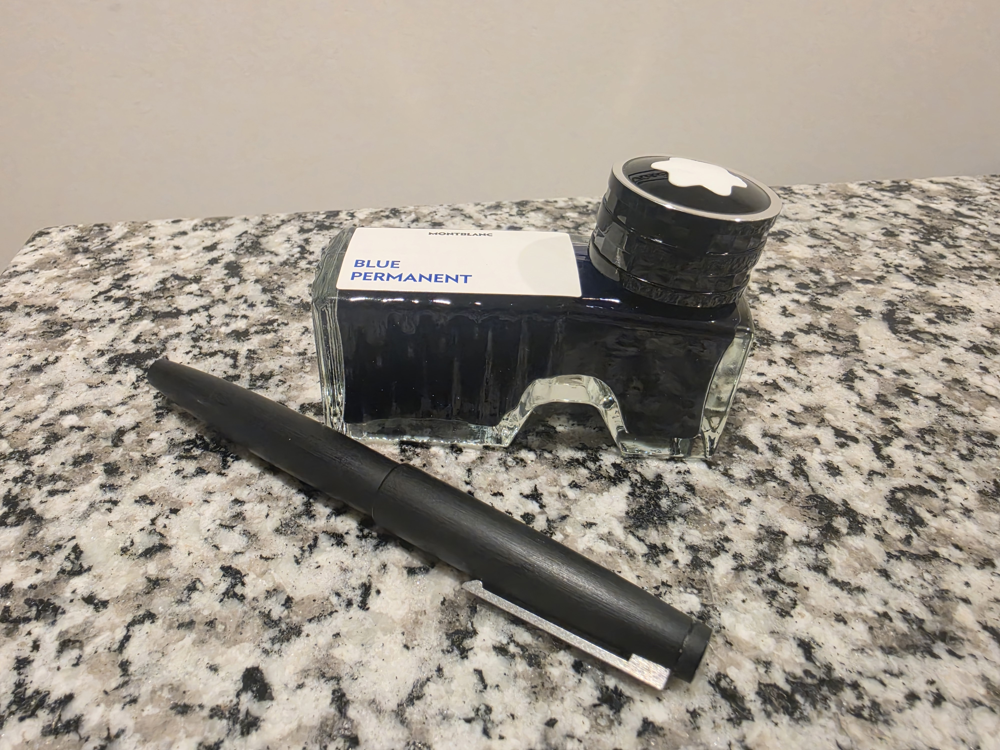

The End of an Era
Sailor Sei-boku has been my go to fountain pen ink for at least 6 years ever since the start of graduate school. I originally chose it for its waterproofness, its lightfastness, and its amazing color. To a mathematician like myself, it was the ultimate ink for capturing my thoughts for review over several years. In the odd case that for some reason my writings are of importance like Einstein’s Zurich notebook, then that permanence is of important is to preserve my documentation for future generations.

The fountain pen that I used to write Boolean Statistical Mechanics by hand was the Leonardo Momento Zero in Blue Hawaii with an Extra Fine steel nib. I originally titled the monograph Boolean Random Walks, but the project had exploded halfway through to become more than just about my little pet solution to colliding random walks.
I am what you might call the perfect end-user of Sailor Sei-boku. I need a permanent ink that may last generations in the odd case my mathematics is of importance (or I merely have an inflated sense of self). I write almost daily, and I write on everything from printer paper, sticky notes, napkins, legal documents requiring blue ink, to Tomoe River fountain pen paper. Unfortunately, a pigmented ink such as Sailor Sei-boku will damage workhorse pens that are cared for. A Pilot Decimo was my first casualty, and I got a lot of mileage out of it during graduate school. The LAMY Studio that I did not care was ultimately destroyed, and its cost is not worth the effort of repairing.
How I Use Fountain Pens
I use fountain pens while researching various possible mathematics and scientific resources such as books, journals, and articles. I often have an idea that I am trying to articulate from first-principles as much as possible. These various online resources allow me to refine my idea as I try to relate two or more simpler ideas in mathematics. To attack an idea, I use the concrete-representational-abstract (CRA) approach to learning mathematics from Singapore, which I did not know had a educational buzzword attached to it until becoming a mathematics educator. I just thought that was how you are supposed to teach math. The CRA approach begins with a rather concrete computational or physical problem, a diagram representing the situation, and the abstract mathematics principle that may imply the solution to the problem.
I often code my idea in RStudio due to my training as a statistician in graduate school. Though slow and bloated at runtime, I find that the R programming language’s high-level abstraction works best for rapidly prototyping my mathematical ideas and algorithms. If I failed to articulate my idea well enough, I will be dissatisfied with the algorithm that I have coded and be forced to burn more pen and paper. It is ironically the diversity yet slowness of R and fountain pens combined that require me to explain my problem more clearly.
I currently do not use large language models in my research projects. Since they used statistical reasoning, they are insufficient for my research that would describe how they can and should work to improve. At most, I leverage GitHub Copilot to handle the setup of this website using a Chinese template. Even if accurate, the outputs of these models can be lost-in-translation or require more effort than simply solving the problem yourself.
A Brief History
Fountain pens and ink may seem a bit of an oddity in the mathematics world. In a world that is increasing its reliance on technological innovations, pen and paper may seem out of touch. Yet it is precisely these devices that helped Alan Turing used in his mathematical writings and personal documentations, devices that would shape our technologically advanced world. In a letter to his parents, Turing himself tried to design one but it would get clogged. If only Turing were alive to read my Boolean Statistical Mechanics, he might have known ahead of time that fluids are computationally complicated (He is of course the reason BSM exists at all).
Fountain pens are themselves a strange piece of history. They solved the problem of a quill and ink, and rather poorly at the start due to the corrosive properties of many inks. The ink that was the mainstay of centuries prior was iron-gall ink, an mixture of acid and iron salt that would corrode the very steel nib it was scripted with. The ink reservoir in fountain pens created its own issue of excessive pressure causing the pen to leak, if you remember calculus homework problems of calculating pressure. The feed was an irrigated channel connecting the nib and the reservoir, acting as both a capacitor of ink and a resistor of pressure.
A Critique of Technology in Learning
Fountain pens are not merely collector’s items or antiques in an era filled with digital writing tools. Computers, tablets, and phones may augment our intelligence, but they themselves do not convert your youthful years of high fluid intelligence (Gf) into crystallized intelligence (Gc). In terms of the Cattell–Horn–Carroll theory of intelligence, these storage devices have excellent long-term memory and retrieval (Glr) with minor corruption. Access to technology however creates the illusion of competence when faced with complex problems or time-sensitive situations.
Looking up resources to solve problems, whether it be through a search engine or language model, is itself insufficient to create progress in the sciences. One must directly engage in the act of problem-solving. Even the most advanced large-language models such as GPT-Astra depend heavily on the quality of the user’s understanding in order to make advancements in mathematics. Heavy language model use has already been linked to decreasing the estimated years of schooling in children by two years, and further dependency will create humans who are not smart enough to understand the technology that human society relies upon. Language models seem to be able to solve math that is within the convex hull of knowledge and fill in our knowledge gaps, but solving problems outside of the hull would require first-principles reasoning similar to a philosopher.
It is best to engage in mathematics using a mixture of pen and paper, computers, and language models in order to simultaneously enhance the mathematician’s capability with and without technology. AI positivists and AI negativists are, by definition, biased in their perception of the logical use cases of statistical language models. They frequent echo chambers in which members double down when presented with contradictory evidence, yet faith in their religion is restored after one win (My abusive ex must really love me! ~ <3). A rational approach to how LMs should be integrated in society requires understanding what they can or cannot do without illusions.
The New Era
My new ink is Montblanc Permanent Blue in a LAMY 2000 in a 14k gold EF nib. That is part of the fun of fountain pens: mixing and matching pen and ink to your heart’s content.

The LAMY 2000 is the ideal understated workhorse for places where you do not want a flash fountain pen, such as the workplace environment or places where it may be stolen. Fountain pens are more expensive than disposable rollerballs, ballpoints, and gel pens, but the comfort in effortless writing has saved me from experiencing more physical injury and strain that a frequent writer such as myself normally would. The LAMY 2000 is not a special edition pen, and that is a good thing for something that I intend to overwork with long writing sessions.
“This is my rifle. There are many like it, but this one is mine.”
Montblanc Permanent Blue has the same permanency qualities as Sailor Sei-boku, but presumably gentler and better on awful paper. Montblanc is known for luxury pens, and my logic is that a very wealthy customer would be very upset of a $30 ink bottle damaged their $10000 dollar pen. Performance on awful paper depends per paper since it is difficult to predict the unique interaction between every combination of ink and paper, but MB Perm Blue seems to perform well on budget copy paper my school district uses.
I will continue to integrate technology into my workflow and keep an eye out for new developments in language models. The greatest use for them that I see is that they can review literature and see problems that would be solved had a human connected the dots by chance. I have no need for them as a conversation problem since I am more than capable of conversing with myself in my head, but I acknowledge not everyone has the ability to be insane.